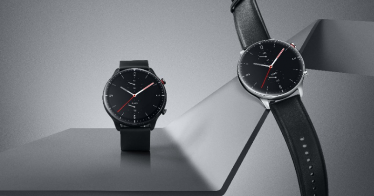
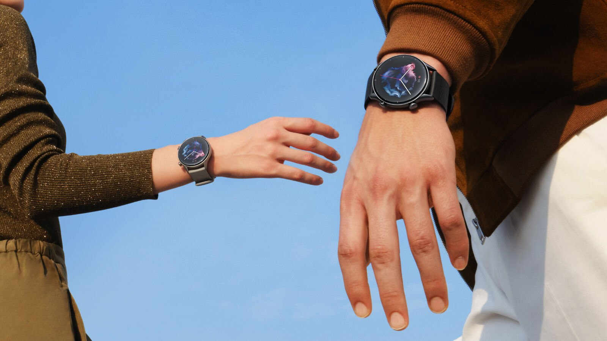
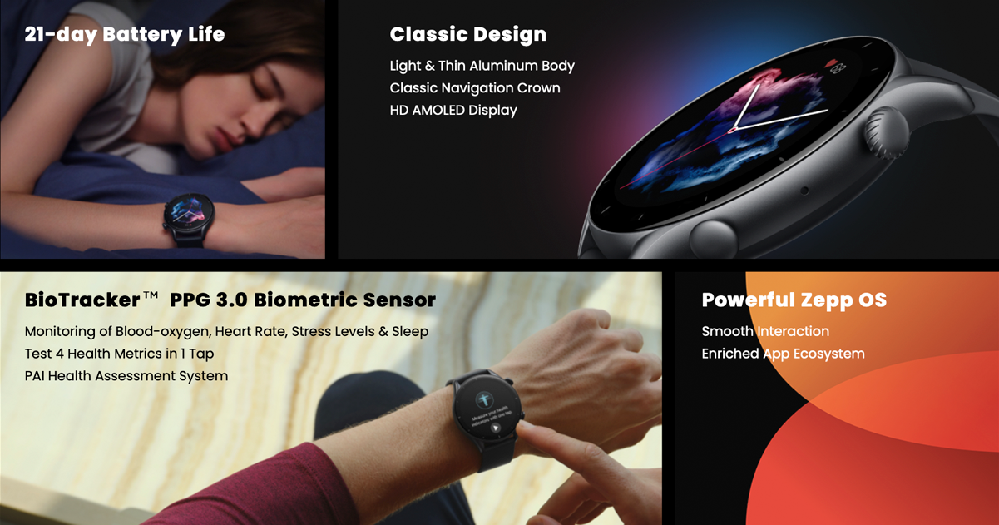
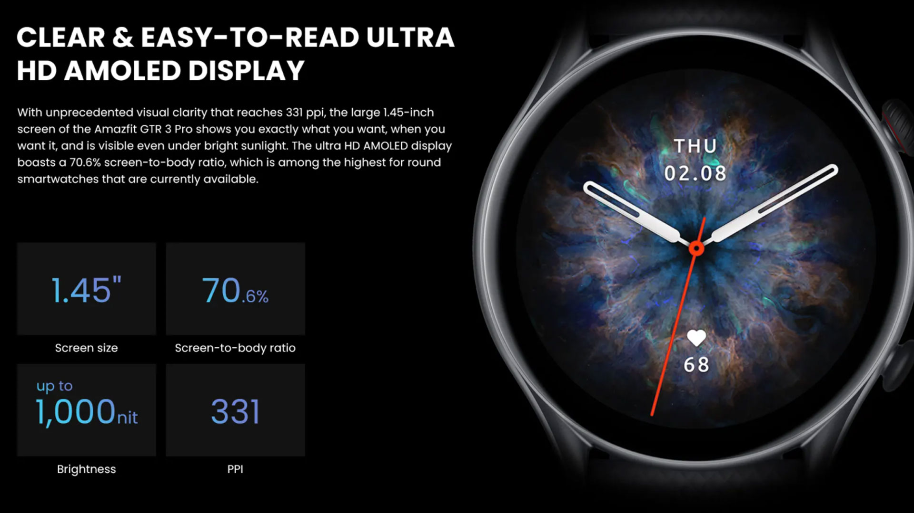
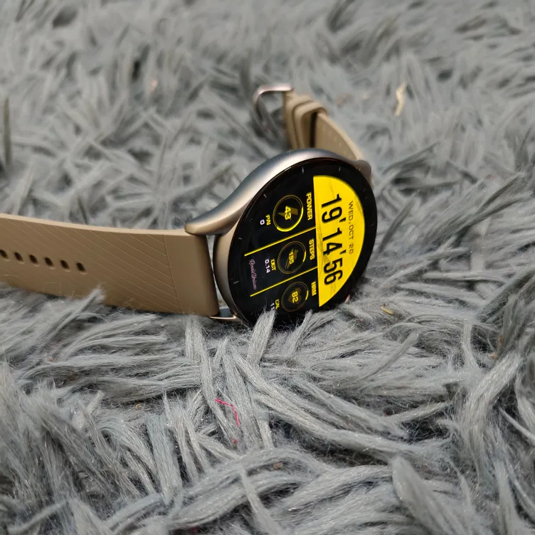

Amazfit GTR 3 Review: The Best Smartwatch You Can Buy

The Amazfit GTR 3 Pro is a smartwatch that will look great on your wrist and offers up a nice mix of fitness and smartwatch staples for Android and iPhone owners. You’ll also get the kind of battery life that won’t have you charging it every day, but it’s still very early days with Zepp’s brand new OS and app store, which are lacking big name apps (and apps in general). Software isn’t free from the odd bug or two either, and ultimately the Pro is a good but not flawless smartwatch.
Section 1: What Is The Amazfit GTR 3?
The Amazfit GTR 3 is a 4G-enabled smartwatch that you can strap onto your wrist for tracking your health, checking your texts, playing games, and more. It’s an affordable watch, coming in at $130 USD, which makes it one of the best bang-for-your-buck smartwatches on the market.

But what makes the Amazfit GTR 3 Pro smart, and more importantly, which version of the Amazfit OS is on offer? The original Amazfit GTR was available from a number of different retailers with different watch faces (including fitness ones), bands and modules that you can upgrade on. There was also the GTR 2, which was the original 3G version of the watch that cost just $60. The GTR 3 Pro then is Amazfit’s latest version of the smartwatch.
On the front of the watch is a 1.23-inch, 360 x 360 AMOLED display.
Design and Display:
The Zepp Amazfit GTR 3 Pro sports a round face that’s slightly bigger than a traditional watch, but at about 4.25-inches is easy to read. I think its shape is unique,
especially when compared to other fitness watches that aren’t quite as round.

There are two circular buttons, one on each side, that activate the timer, stopwatch, and shortcut buttons that let you jump into different sections of the OS. The
central button is the primary way to interact with the watch, and is how you access most of the watch’s different features. On the right side of the watch are more
buttons for rotating the crown, the setting for when the watch turns off or when it's time to charge.The watch itself isn’t touch sensitive, so you don’t need to press it.
Hardware And Software:
Measuring 40mm in diameter and 16mm thick, the GTR 3 is smaller than many of the more famous Android smartwatches out there and smaller than some Android Wear devices. Its 42mm diameter fits the same design mold as the Fitbit Ionic, Polar M600, and most of the wearable gaming devices on the market, including the Nammo N800. While that’s a fairly wide format, we’ve not seen a device this small that excels in many areas. It’s thin enough to be attractive, but the GTR 3 is bulkier than it looks, heavier than most Android Wear devices, and not as comfortable as some of the best fitness-first watches on the market, like the Samsung Gear Sport or Misfit Vapor.  The GTR 3 isn’t the only smartwatch you can buy this size.
Fitness Tracking
The Amazfit GTR 3 boasts a pretty good set of fitness tracking features in its standard mode. You’re free to go into the GTR 3’s extras mode and turn on automatic activity detection, which is the default, or manually track anything from running and swimming to cycling and basketball. The GTR 3 doesn’t have the stamina to accurately track outdoor running or biking, so it’s not really a smartwatch that will suit people who exercise regularly. Even something as simple as running, walking and jogging is a problem with the GTR 3 – it can’t track how far and how fast you’re going, nor can it show distance traveled in either direction. So, if you want to track the distance you’re running or cycling, then you’ll want to get a dedicated fitness tracker.
Smartwatch Functions
The Pro has a standard long-press function for any app and the Amazfit interface is much more simple than Apple’s watchOS or Google’s Wear OS (formerly Android Wear), but it’s just like Samsung’s Tizen watches. The good news is that the screen isn’t a touchscreen.
In terms of fitness functions, the GTR 3 pro offers the same thing as most other smartwatches on the market — step tracking, distance, calories burnt and heart rate monitoring (all easily to see on the screen) — but it’s easy to ignore the metric readings if you’re not a fitness buff. The smartwatch is also IP67 certified water resistant, which means it can withstand sweat and rain. I found it worked really well in my testing, though, as I was able to swim in it without problems.
How Well Does It Work?
The Amazfit GTR 3 Pro is really one of those Android Wear and iPhone Watch hybrids that I’ve been describing in recent months. Its best features are the battery life and the watch face.
[ Conclusion: To find an Android Wear smartwatch that gives you the most bang for your buck, you really need to look elsewhere — or else you’re probably going to end up paying significantly more for a watch with similar functionality and battery life. ]